The Relational Database Model
The Relational Database Model¶
- 3 Well defined components
- A logical data structure represented by relations
- A set of integrity rules to enforce that the data is consistent and remains consistent over time
- A set of operations that defines how data is manipulated
RDM Logical Structure¶
- DBMS sits between application and Database and abstracts data and metadata.
- RDM allows designer to ignore physical data layer by focusing on logical layer.
- Table/Relation concept leads to structural and data independence.
Basic Components & Table Structure¶
{kind=link}
| Term | RDM Term | Interpretation |
|---|---|---|
| Table | Relation | sometimes mistakenly called a file |
| Row | Tuple | sometimes mistakenly called a record |
| Columns | Attributes | sometimes mistakenly called a field |
| Keys | Unique Group of Attributes | Determiniation: Knowing A -> Knowing B |
{kind=link}
- Keys are Full Functional Dependencies, Knowing the Key attribute(s) -> determins the values of other attributes.
- Full indicates ALL Key Attributes are necessary to determine determinants.
- e.g. Determinant (Key) determins -> Determinant (Other attributes)
- STU_NUM -> (STU_LNAME, STU_FNAME, STU_GPA)
- Composite Keys: keys with more than one key attribute
- Super Key: Uniquly determins (one and onkly one Row) all other attributes in table (Full Functional Dependency)
- Candidate Key: Superkey without unnecessary attributes.
- Primary Key: A candidate key chosen by the designer
- Ensures Entity Integrity (Rows unique) by ensuring:
- PK is unique
- PK can’t be NULL
- Ensures Entity Integrity (Rows unique) by ensuring:
- NULL: Absence of value
- Many NULLS indicates bad design
- Some can’t be avoided (e.g. middle name)
- Can cause issues with COUNT, SUM, etc.
- Can cause issues with JOINs
- Foreign Key: PK of one table placed in another to create a relationship.
- Ensures Referential Integrity (Every FK must be NULL or have a valid PK in related table).
- Secondary Key: Key use to narrow/speed up query results
- Not guranteed to be unique
{kind=link}
- Some designers use flags instead of NULLS to alert user/application of certain conditions.
Relational Operators & Manipulation¶
- Relational Algebra: Theoretical ways of manipulating relations with relational operators.
- Later we’ll learn to use SQL to accomplish relational algebra operations.
- Minimally Relational: SELECT, PROJECT, JOIN
- When speaking in terms of Relational Algebra:
- RelVar (R) == Table: Structure that holds the data, which has 2 parts
- Heading: Names of attributes
- Body: Holds the relation
- Relation (r) == The actual data
- RelVar (R) == Table: Structure that holds the data, which has 2 parts
Set Operators¶
Note
Because Set Operators have closure property (i.e. Set Operators on relations ALWAYS produce new relations), you can combine them like so!
πcus_fname,cus_lname(σcus_code=10010(customer))
- SELECT (or RESTRICT): Single table as input (unary), and retrives ALL or horizontal subsection of relation (i.e. rows).
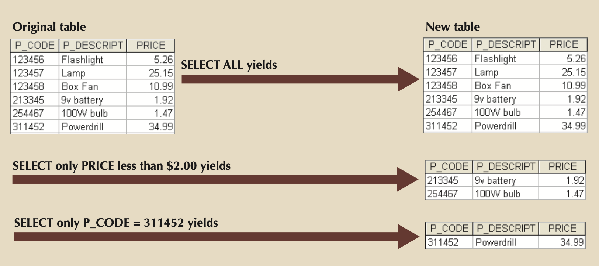
- σcus_code=10010(customer)
- PROJECT: Single table as input (unary), and retrieves ALL vertical subsection of relation (i.e. columns)
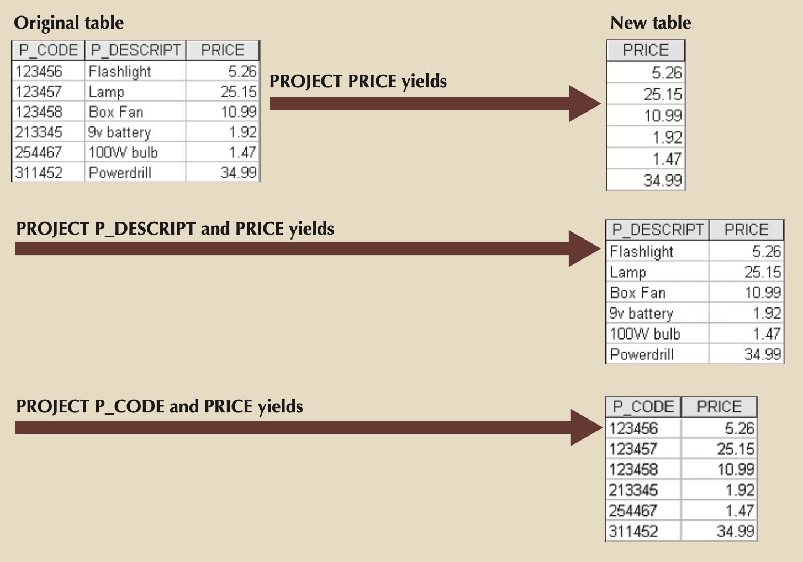
- πcus_fname,cus_lname(customer)
- UNION: Combines rows of TWO relations (minus duplicates) with same attributes and domains (i.e. 2 tables with same number of columns and column types in the same order).
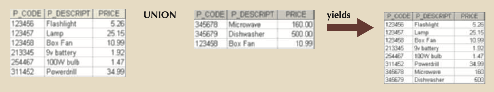
- πsupplier_name(supplier) ⋃ πvendor_name(vendor)
- INTERSECT: Yields only rows in common between TWO relations with same attributes and domains
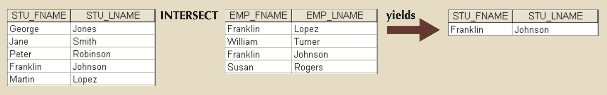
- πsupplier_name(supplier) ⋂ πvendor_name(vendor)
- DIFFERENCE: Yields only rows found in relation 1 that aren’t in relation 2
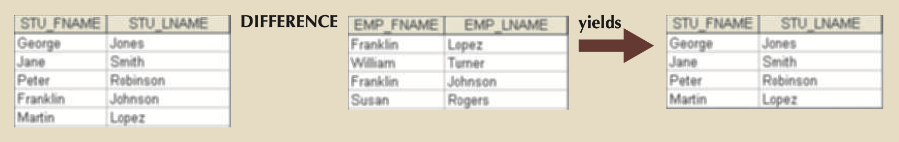
- πsupplier_name(supplier) – πvendor_name(vendor)
- PRODUCT: All possible combinations for rows from TWO tabnles.
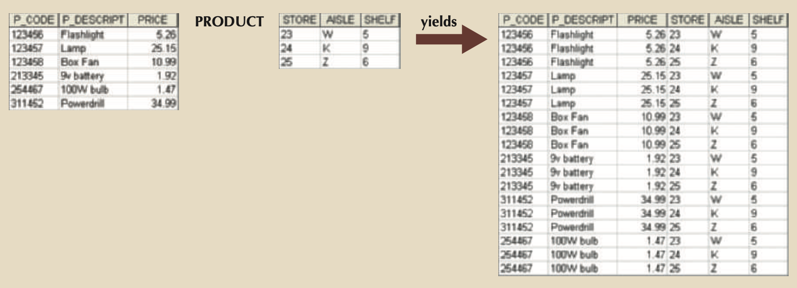
- customer × agent
- JOIN:
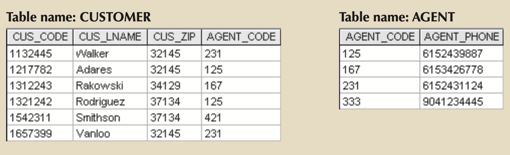
- Natural Join: 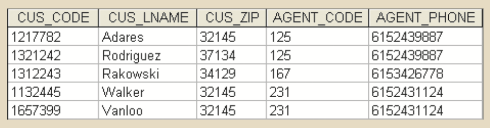
- customer ⋈ agent
- πcus_code,cus_lname,cus_fname,cus_initial,cus_renew_date,agent_code,agent_areacode,agent_phone,agent_lname,agent_ytd_sls(σcustomer.agent_code=agent.agent_code(customer × agent))
- Left Outer Join: 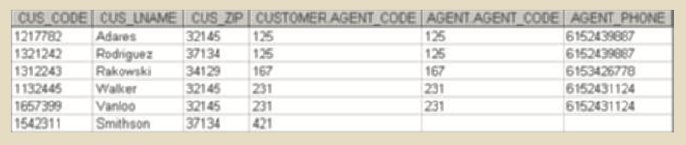
- Yields all of the rows in the relation 1, including those that do not have matching values in relation 2
- {(a1,…,an)} be the singleton relation on the attributes that are unique to the relation agent
- customer ⋈ agent ⋃ ((customer – πc1,c2,c3,…,cn(customer ⋈ agent)) × {(a1,…,an)})
- Right Outer Join: 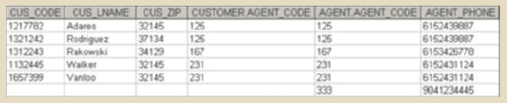
- Yields all of the rows in the relation 2, including those that do not have matching values in relation 1
- Outer joins are the application of JOIN, DIFFERENCE, UNION, and PRODUCT
- Natural Join: 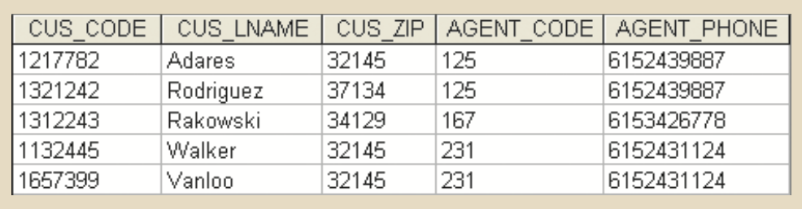
- DIVIDE: Relation 1 is divided by Relation 2 on a common attribute to yield all data in Relation 1 that matches all data in Relation 2.
- To be included in the result, unshared columns/attributes must have all the common attributes from table 2 associated in its rows. 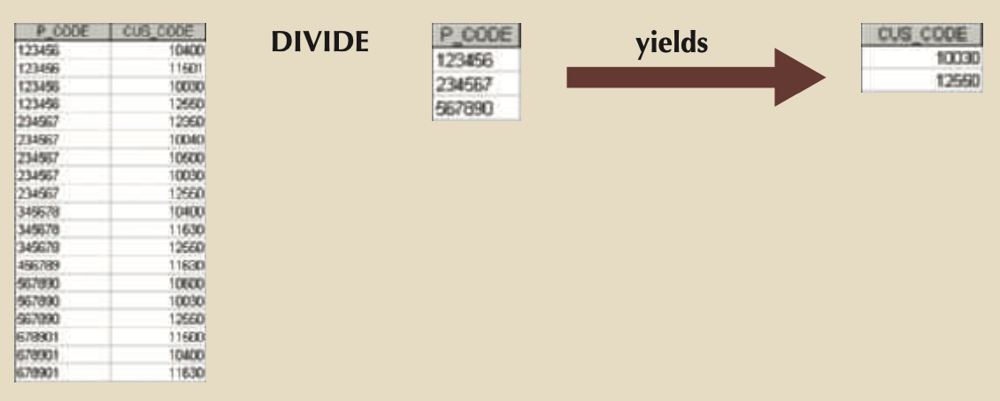
- r ÷ s
{kind=link}
{kind=link}
{kind=link}
{kind=link}
{kind=link}
{kind=link}
{kind=link}
{kind=link}
{kind=link}
{kind=link}
{kind=link}
Data Dictionary & System Catalog¶
- Both are metadata (data about data)
Data Dictionary - Designer View¶
- Description of all tables in DB, and at a minimum contains:
- Attributes
- Relationship types
- Entities
- Referential integrity checks and enforcement
- Index types and components
{kind=link}
System Catalog - System View¶
- Is a detailed, system data dictionary.
- Data about all objects in the DB, like:
- Table names
- Table’s creator and creation date
- Number of columns in each table
- Data type corresponding to each column
- Index filenames
- Index creators
- Authorized users
- Access privileges
- System created Database, that can be queried using SQL
Identifying Entities & Relationships¶
- 1:M Is normal
- Easily implemented by putting the primary key of the 1 side in the table of the many side as a foreign key.
- 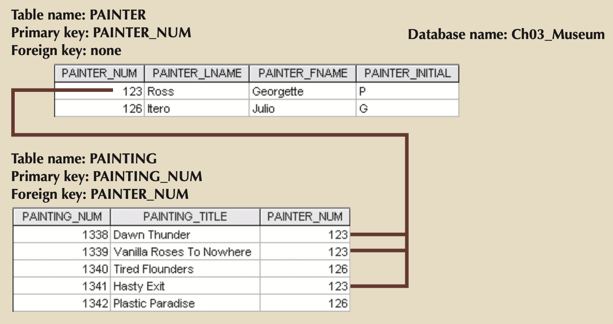
- 1:1 Is rare
- Typically done by putting the primary key of one of the 1 sides in the other table. If the tables already have a 1:M relationship, the 1:1 relationship should be enforced by moving the primary key of the M side into the table with the 1 side.
- You can also link on other candidate keys as long as they are non-null and unique as defined.
- 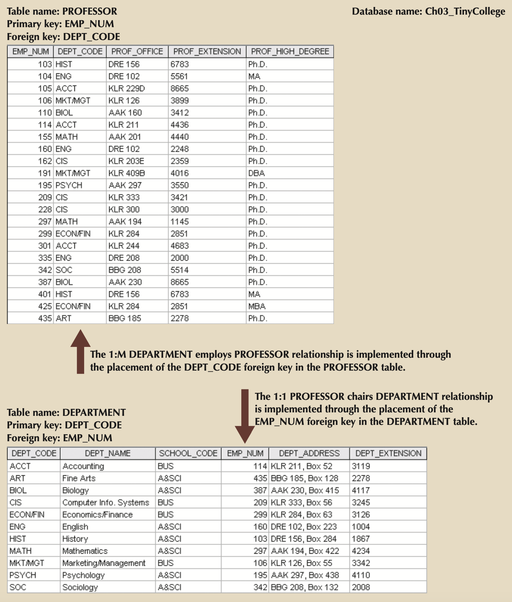
- M:N Turns into multiple 1:M’s by introducing a linking table (i.e. composite, bridge, associative entity)
- Create a linking table with the primary key of the M side and the primary key of the N side becoming the primary key of the linking table. Introduce any other attributes to the linking table you think should be associated with the relationship.
- 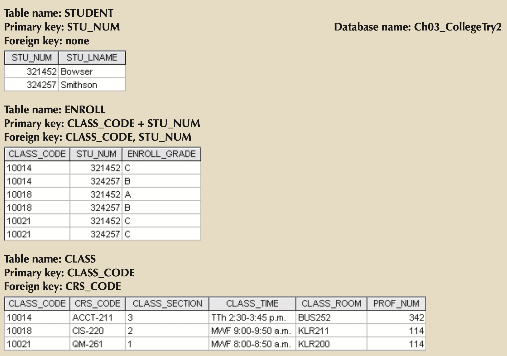
{kind=link}
{kind=link}
{kind=link}
Handling Data Redundancy in RDM¶
Note
The real test of redundancy is not how many copies of a given attribute are stored, but whether the elimination of an attribute will eliminate information. Therefore, if you delete an attribute and the original information can still be generated through relational algebra, the inclusion of that attribute would be redundant. Given that view of redundancy, proper foreign keys are clearly not redundant in spite of their multiple occurrences in a table. However, even when you use this less restrictive view of redundancy, keep in mind that controlled redundancies are often designed as part of the system to ensure transaction speed and/or information requirements.
- One such purposeful redundancy is product line price on an Invoice Line Item VS the product’s current price in a product table.
- Another is the automatic generation of an invoice Line Number, which is redundant but allows for ordering line-items the same way everytime the invoice data is re-constructed.
Purpose of Indexing¶
- Index: An ordered arrangement of keys and pointers. Each key points to the location of the data identified by the key. 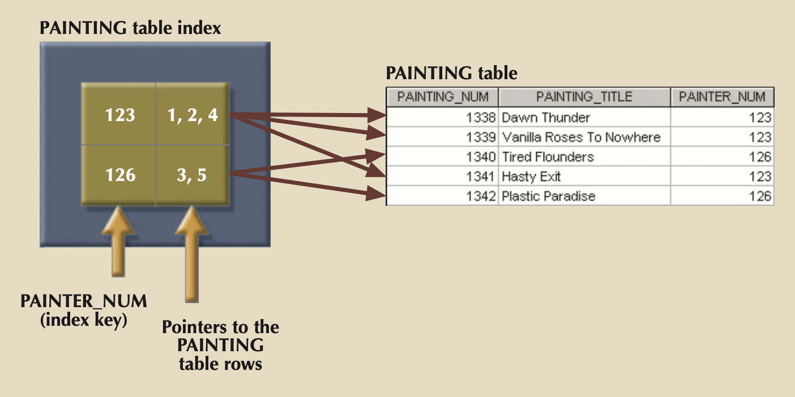
- Used to locate a needed item quickly via pointers.
- Can also be used to QUICKLY retrieve data ordered by a specific attribute or attributes (think Customers ordered by name, or Products ordered by Manufacturer).
- Primary Key is a special index called a Unique Index that can only have a single pointer.
- Indexes with multiple attributes, i.e. (PROD_CODE, MANUFACTUER_CODE), are called composite indexes.
{kind=link}
Am I an RDMS?¶
| Rule | Rule Name | Description |
|---|---|---|
| 1 | Information | All information in a relational database must be logically represented as column values in rows within tables. |
| 2 | Guaranteed access | Every value in a table is guaranteed to be accessible through a combination of table name, primary key value, and column name. |
| 3 | Systematic treatment of nulls | Nulls must be represented and treated in a systematic way, independent of data type. |
| 4 | Dynamic online catalog based on the relational model | The metadata must be stored and managed as ordinary data—that is, in tables within the database; such data must be available to authorized users using the standard database relational language. |
| 5 | Comprehensive data sublanguage | The relational database may support many languages; however, it must support one well-defined, declarative language as well as data definition, view definition, data manipulation (interactive and by program), integrity constraints, authorization, and transaction management (begin, commit, and rollback). |
| 6 | View updating | Any view that is theoretically updatable must be updatable through the system. |
| 7 | High-level insert, update, and delete | The database must support set-level inserts, updates, and deletes. |
| 8 | Physical data independence | Application programs and ad hoc facilities are logically unaffected when physical access methods or storage structures are changed. |
| 9 | logical data independence | Application programs and ad hoc facilities are logically unaffected when changes are made to the table structures that preserve the original table values (changing order of columns or inserting columns). |
| 10 | Integrity independence | All relational integrity constraints must be definable in the relational language and stored in the system catalog, not at the application level. |
| 11 | Distribution independence | The end users and application programs are unaware of and unaffected by the data location (distributed vs. local databases). |
| 12 | Nonsubversion | If the system supports low-level access to the data, users must not be allowed to bypass the integrity rules of the database. |
| 13 | Rule zero | All preceding rules are based on the notion that to be considered relational, a database must use its relational facilities exclusively for management. |